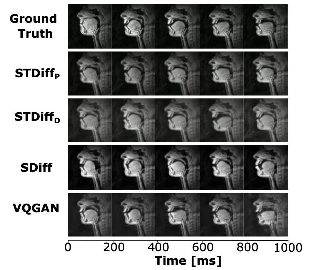
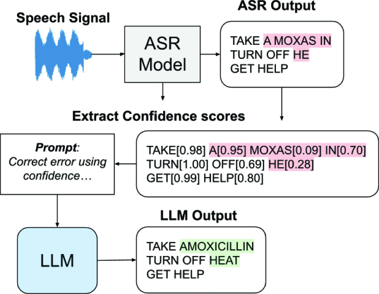
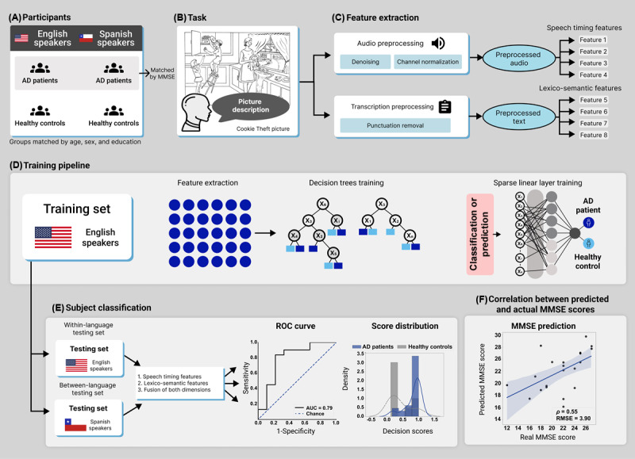

Recent momentum
Recent papers highlight vocal tract MRI synthesis, disordered speech recognition, and audiovisual phonological modeling.
Publications
A concise selection of recent and representative publications across speech and language processing, health-related machine learning, clinically grounded large language models, and medical imaging.
Recent papers highlight vocal tract MRI synthesis, disordered speech recognition, and audiovisual phonological modeling.
Recent work studies instruction-tuned LLMs for speech recognition support and the responsible use of LLMs in multilingual mental health settings.
Publications connect speech, medical imaging, and multimodal learning for clinically meaningful analysis and generation.

An audio-to-video diffusion framework for generating vocal tract MRI sequences from speech.

A confidence-aware post-processing framework designed to improve recognition robustness for disordered speech.

An LLM-based approach for improving automatic speech recognition performance for speakers with Parkinson’s disease.
Text, Speech and Dialogue. DOI: 10.1007/978-3-032-02548-7_6.
DOISPIE Medical Imaging 2026. DOI: 10.1117/12.3087986.
DOIScientific Reports, 15, Article 36197. DOI: 10.1038/s41598-025-19980-x.
DOIJournal of Medical Internet Research. DOI: 10.2196/74200.
DOILanguage Resources and Evaluation, 59, 3117-3138. DOI: 10.1007/s10579-025-09851-2.
DOIInterspeech 2024. DOI: 10.21437/Interspeech.2024-2115.
DOIInterspeech 2023. DOI: 10.21437/Interspeech.2023-2079.
DOI